期中考整理
考古題題目
https://drive.google.com/file/d/1jW3ZWd3jyXJPkjxMPVnw2AYy-jaIqaO9/view?usp=sharing
容易忘記的
路徑小結論
1.找 quartus 的 drivers
C:\altera\13.0sp1\quartus\drivers
2.找 modelsim_ase ， 注意是 ase !!! ，然後再找有寫 32 的
C:\altera\13.0sp1\modelsim_ase\win32aloem\
flowchart LR
A["C:"] --> B["altera"]
B --> C["13.0sp1"]
C --> D["quartus"]
D --> E["drivers"]
C --> F["modelsim_ase"]
F --> G["win32aloem\\(記得加上\\)"]安裝 USB
C:\altera\13.0sp1\quartus\drivers
訣竅： 找 altera -> quartus ->

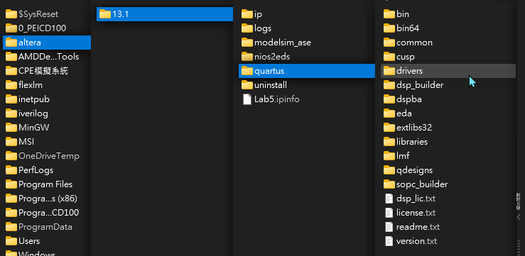
testbench 路徑設定
在 ModeSim-Altera 填上：
C:\altera\13.0sp1\modelsim_ase\win32aloem\
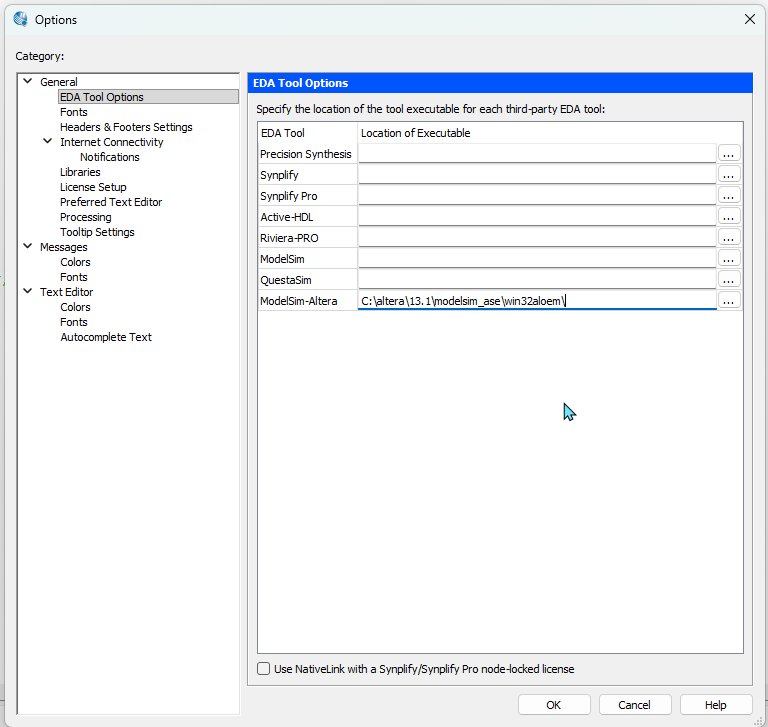
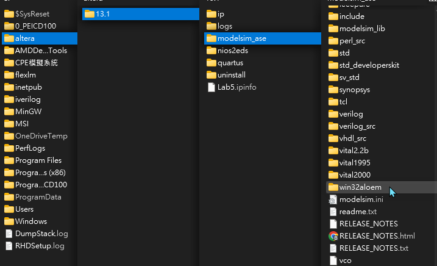
畫波形圖如果遇到 Error occur
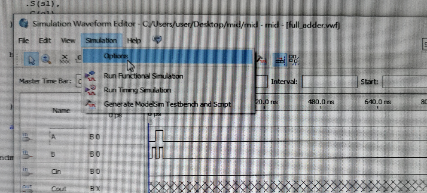
要選 Quartus II !!
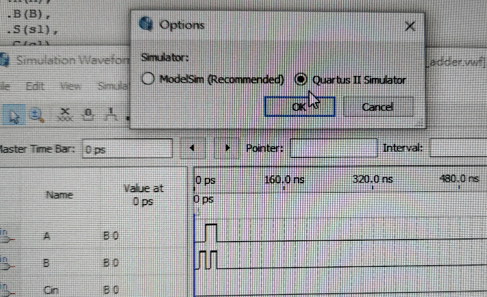
一般 .v 跑合成
用 "Start Analysis & Synthesis" (開始分析與合成)
error 、 warning 都要看！！
像下面就找出了 s1 有問題。
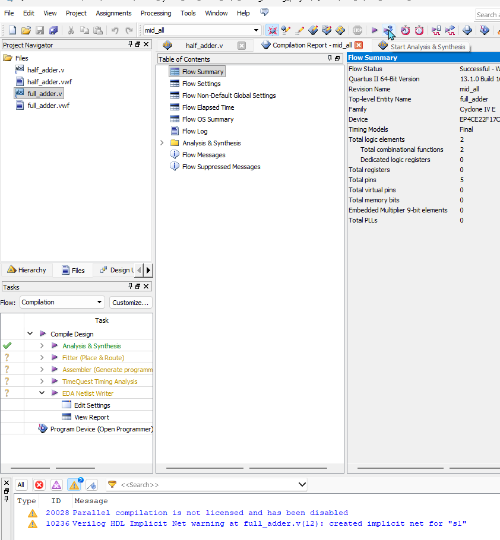
要長這樣才是對的，只剩下一個 warning ，並且寫 Parallel compilation is not licensed and has been disabled (平行編譯功能沒有授權，所以被關閉了)
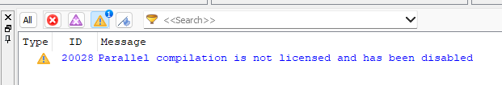
tb.v 跑合成
像下面那樣就是代表沒有語法錯誤，因為 tb 不能 synthesize(合成)
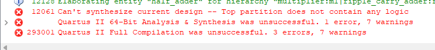
上傳電路板
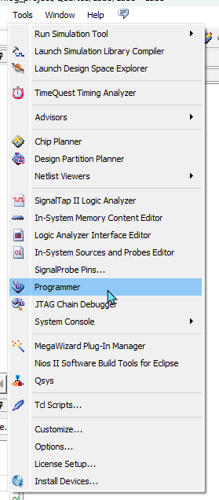
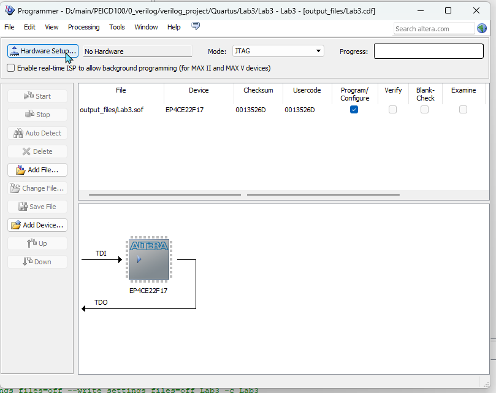
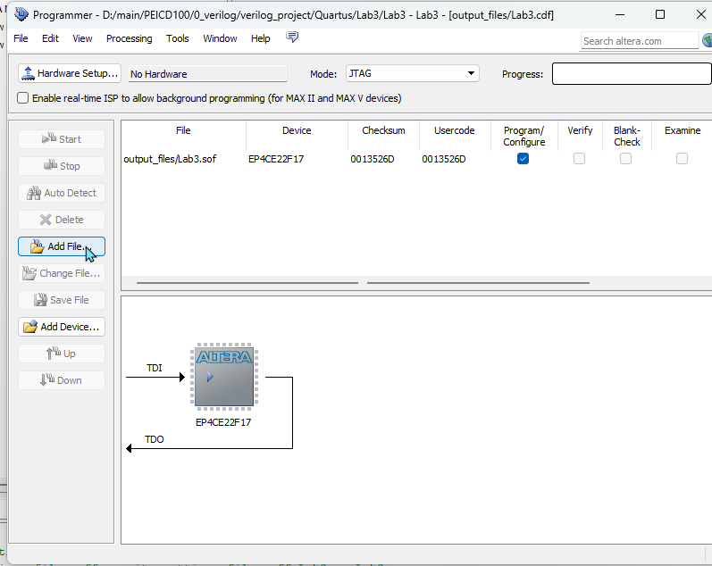
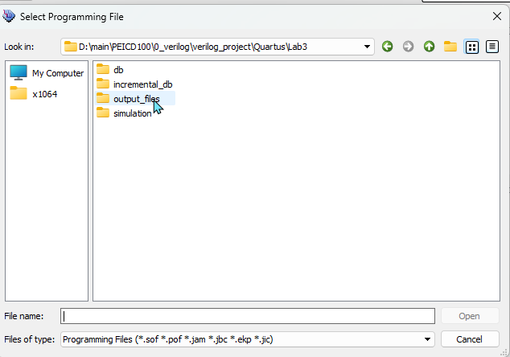
選 sof 檔案
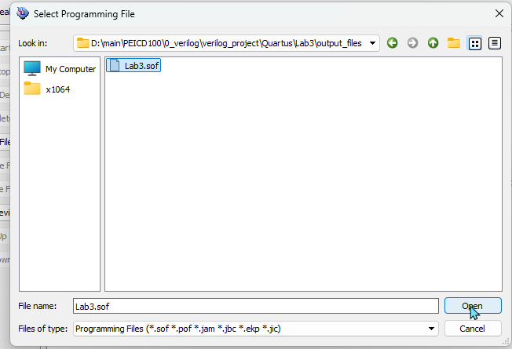
代碼整理
第一題
half_adder.v
module half_adder(
input A,B,
output S,C
);
assign S = A ^ B;
assign C = A & B;
endmodule
full_adder.v
module full_adder (
input A,B,Cin,
output S,Cout
);
wire s1,c1,c2;
half_adder h1 (
.A(A),
.B(B),
.S(s1),
.C(c1)
);
half_adder h2 (
.A(s1),
.B(Cin),
.S(S),
.C(c2)
);
assign Cout = c1 | c2;
endmodule
ripple_carry_adder.v
module ripple_carry_adder (
input [3:0] A,B,
input Cin,
output [3:0]S,
output Cout
);
wire c1,c2,c3;
full_adder f1 (
.A (A[0]),
.B (B[0]),
.Cin (Cin),
.S (S[0]),
.Cout(c1)
);
full_adder f2 (
.A (A[1]),
.B (B[1]),
.Cin (c1),
.S (S[1]),
.Cout(c2)
);
full_adder f3 (
.A (A[2]),
.B (B[2]),
.Cin (c2),
.S (S[2]),
.Cout(c3)
);
full_adder f4 (
.A (A[3]),
.B (B[3]),
.Cin (c3),
.S (S[3]),
.Cout(Cout)
);
endmodule
multiplier.v
module multiplier (
input [2:0] A,
input [3:0] B,
output [6:0] S
);
wire [3:0] a0b = {4{A[0]}} & {B};
wire [3:0] a1b = {4{A[1]}} & {B};
wire [3:0] a2b = {4{A[2]}} & {B};
wire [3:0] w;
assign S[0] = a0b[0];
ripple_carry_adder r1 (
.A ({1'b0,a0b[3:1]}),
.B (a1b),
.Cin(1'b0),
.S ({w[2:0],S[1]}),
.Cout(w[3])
);
ripple_carry_adder r2 (
.A (w),
.B (a2b),
.Cin(1'b0),
.S (S[5:2]),
.Cout(S[6])
);
endmodule
tb_multiplier.v
module tb_multiplier ();
reg [2:0] A;
reg [3:0] B;
wire [6:0] S;
multiplier m1 (
.A(A),
.B(B),
.S(S)
);
integer i, j;
initial begin
for (i = 0; i < 8; i = i + 1) begin
for (j = 0; j < 16; j = j + 1) begin
A = i;
B = j;
#10;
end
end
end
initial begin
$monitor($time, (" A: %d | B: %d | S: %d "), A, B, S);
end
endmodule
第二題
three_bits_decoder_enable.v
module three_bits_decoder_enable(
input [2:0] I,
input En,
output reg [7:0] Y
);
always @(*)begin
Y = 8'b00000000; //預設輸出為 0，不要放在 Enable 裡面
if(En)begin
case(I)
3'd0: Y = 8'b00000001;
3'd1: Y = 8'b00000010;
3'd2: Y = 8'b00000100;
3'd3: Y = 8'b00001000;
3'd4: Y = 8'b00010000;
3'd5: Y = 8'b00100000;
3'd6: Y = 8'b01000000;
3'd7: Y = 8'b10000000;
endcase
end
end
endmodule
decoder_4_to_16.v
module decoder_4_to_16 (
input [3:0] I,
output [15:0] Y
);
three_bits_decoder_enable t1(
.I(I[2:0]),
.En(~I[3]), //記得 ~
.Y(Y[7:0])
);
three_bits_decoder_enable t2(
.I(I[2:0]),
.En(I[3]),
.Y(Y[15:8])
);
endmodule
Bin2Gray.v
module Bin2Gray(
input [3:0] I,
output [3:0] Y
);
wire [15:0] m;
decoder_4_to_16 d1(
.I(I),
.Y(m)
);
assign Y[3] = m[8] | m[9] | m[10] | m[11] |
m[12] | m[13] | m[14] | m[15];
assign Y[2] = m[4] | m[5] | m[6] | m[7] |
m[8] | m[9] | m[10] | m[11];
assign Y[1] = m[2] | m[3] | m[4] | m[5] |
m[10] | m[11] | m[12] | m[13];
assign Y[0] = m[1] | m[2] | m[5] | m[6] |
m[9] | m[10] | m[13] | m[14];
endmodule
tb_Bin2Gray.v
module tb_Bin2Gray();
reg [3:0] I;
wire [3:0] Y;
Bin2Gray b1(
.I(I),
.Y(Y)
);
integer i;
initial begin
for(i=0;i<=15;i=i+1)begin
I = i;
#10;
end
end
initial begin
$monitor($time," B: %b | G: %b",I,Y);
end
endmodule